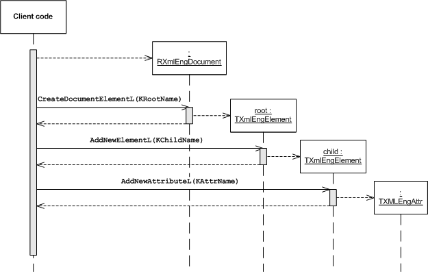

Modifying
DOM Tree
This topic explains how to create or modify a DOM tree by adding
nodes and changing their contents.
Before you start, you must:
The following diagram shows a sequence of calls that
create a DOM tree from an empty document. There are many functions in the
DOM Engine API that add nodes to a tree: refer to the reference documentation
of the TXmlEngElement class for a comprehensive
list.
Figure 1. Creating a DOM tree

Create an instance of RXmlEngDocument.
RXmlEngDocument myDoc;
Set the root node with the RXmlEngDocument::CreateDocumentElementL() function.
_LIT8( KRootName, "playlist" );
TXmlEngElement root = myDoc->CreateDocumentElementL( KRootName );
Add child nodes and attributes by calling the TXmlEngElement::AddNewElementL() and TXmlEngElement::AddNewAttributeL() functions.
_LIT8( KChildName, "song" );
_LIT8( KAttrName, "filename" );
for( TInt i=1;i<6;i++ )
{
TXmlEngElement tempElement = root.AddNewElementL( KChildName );
TBuf8<12> value( _L8( "music0" ) );
value.AppendNum( i );
value.Append( _L8( ".mp3" ) );
tempElement.AddNewAttributeL( KAttrName, value );
}
Swap the first two song elements by calling the TXmlEngElement::MoveAfterSibling() function.
TXmlEngNode swap = root.FirstChild();
swap.MoveAfterSibling( swap.NextSibling() );
If you want to save the DOM tree into a file, call the XmlEnginePushL() method
first.
You must call the XmlEnginePushL() method
before parsing or saving an XML file, and the XmlEnginePopAndClose() method
after these operations.
The result is a DOM tree corresponding to the following XML structure:
<playlist>
<song filename = "music02.mp3"/>
<song filename = "music01.mp3"/>
<song filename = "music03.mp3"/>
<song filename = "music04.mp3"/>
<song filename = "music05.mp3"/>
</playlist>
Copyright ©2010 Nokia Corporation and/or its subsidiary(-ies).
All rights
reserved. Unless otherwise stated, these materials are provided under the terms of the Eclipse Public License
v1.0.